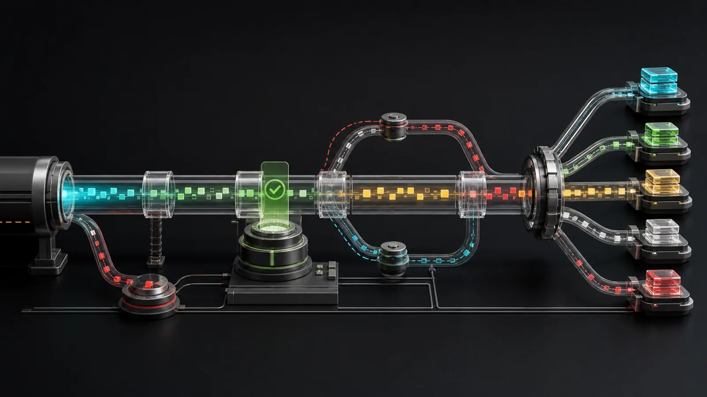

Consume
fetchSSE supports POST bodies, auth, abort, resume IDs, retry policy and three timeout phases.

Server-Sent Events, end to end
Parse, encode, reconnect and serve real-time streams with one zero-dependency package.
npm install @stackline/sse
Runs locally in this page
The parser receives this stream in incremental chunks.
No request leaves this page. The playground executes the package browser build directly.
One coherent contract
fetchSSE supports POST bodies, auth, abort, resume IDs, retry policy and three timeout phases.
createParser handles split UTF-8, CR, LF, CRLF, comments, retry fields and bounded buffers.
encodeSSE and encodeJSON prevent field injection and preserve multiline payloads.
eventStreamResponse and channels expose backpressure, heartbeats and correct HTTP headers.
import { fetchSSE } from '@stackline/sse';
for await (const event of fetchSSE('/api/generate', {
method: 'POST',
body: JSON.stringify({ prompt: 'Hello', stream: true }),
idleTimeout: 45_000,
retry: { retries: 3 }
})) {
if (event.data === '[DONE]') break;
render(JSON.parse(event.data));
}Publish once, run broadly
Oversized or malformed input fails with stable error codes instead of growing memory without a bound.
Start with one dependency
ESM, CommonJS, browser bundle and declarations ship from the same tested artifact.